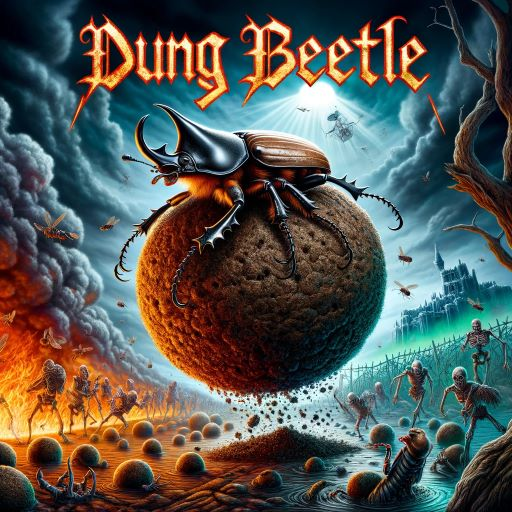

FastAI Lesson 4
FastAI Lesson 4
Tenacious Animal

Recap
This lesson was about NLP. The video differs from the book, in that it uses the huggingface (🤗) transformers library. This library provides a convenient mid-level api for working with models. In the lesson there were a couple salient point: - Using a language model for classification (or sequence classification or sentiment analysis). Basically this is about outputting a category label given an input document. - Thinking about how to turn things into classification problems. The basic instance of this type of problem would be sentiment analysis (ie ‘is this review favorable or not?’). In the case of the example data, we’re trying to label patent categories<>descriptions tuples as being more or less similar. - Constructing appropriate training, validation, and test sets. - Using pandas dataframes. - Pearson coefficient for calculating metrics. We use this because that’s how kaggle calculates the contest. - The tokenization process and how that all works (basically splitting up the input document into a list of tokens and then turning those tokens into numbers). This answers the question of how a mathematical function can operate on a document.
I played with reproducing the results using a different model, distilbert-base-uncased, which is the 🤗 default model. It took a while to massage our previous metrics function to work. They have an evaluate library which I used. My results were worse and took longer to train, but it was useful to go through the exercise. I played with a few things like feature engineering (creating the input documents in various ways) and training for longer, but I was never able to match the results. I also played with using a specifically patent trained language model for this. That work is in process because it involves converting a AutoModelForSeq2SeqLM model into a classifier model. That’s a project I want to understand a little more deeply and will write about when I get it to work. Chatgpt gave me some help, but I think I’ll experiment with copilot to see what it can do. It seems to involve adding a classification layer which takes the outputs of the model and reduces them down to N categories.
Quiz
- What is “self-supervised learning”? Learning where there are no labels, per-se
- What is a “language model”? A language model is a model that predicts the next word in a sequence of words.
- Why is a language model considered self-supervised? Because it is trained on a corpus of text, and the labels are the next word in the sequence. This means the labels are the input text, just shifted by one word. We don’t have to explicitey provide labels.
- What are self-supervised models usually used for? They are used to create a representation of the input data that can be used for other tasks.
- Why do we fine-tune language models? Because the language model is trained on a corpus of text that is different from the corpus of text we want to use it on. So we fine-tune it on the corpus of text we want to use it on.
- What are the three steps to create a state-of-the-art text classifier?
- Fine-tune a language model on a dataset of unlabeled text
- Fine-tune the language model on your labeled dataset
- Use the fine-tuned language model to train a classifier
- How do the 50,000 unlabeled movie reviews help us create a better text classifier for the IMDb dataset? This gives the language model context specific knowledge about the language used in movie reviews.
- What are the three steps to prepare your data for a language model?
- Tokenize the text
- Numericalize the tokens
- Create batches
- What is “tokenization”? Why do we need it? Tokenization is the process of splitting a document into a list of tokens. We need it because we can’t feed text into a neural network, we need to feed numbers.
- Name three different approaches to tokenization.
- Split on spaces
- Split on characters
- Use a library like spaCy
- What is
xxbos? It is a token that indicates the beginning of a text. - List four rules that fastai applies to text during tokenization.
- All text is lowercased
- All punctuation is replaced with tokens
- All numbers are replaced with a special token
- Words are replaced with a token if they are not in the vocabulary
- Why are repeated characters replaced with a token showing the number of repetitions and the character that’s repeated? Because it is a common pattern in text, and it is useful to have a token for it. It also compacts the vocabulary.
- What is “numericalization”? Numericalization is the process of mapping tokens to integers.
- Why might there be words that are replaced with the “unknown word” token? Because they are not in the vocabulary.
- With a batch size of 64, the first row of the tensor representing the first batch contains the first 64 tokens for the dataset. What does the second row of that tensor contain? What does the first row of the second batch contain? (Careful—students often get this one wrong! Be sure to check your answer on the book’s website.) The second row of the tensor contains the second batch. The first row of the second batch contains the 65th to 128th tokens.
- Why do we need padding for text classification? Why don’t we need it for language modeling? We need padding for text classification because we need to have the same length for each input. We don’t need it for language modeling because we are predicting the next word in the sequence, so we don’t need to have the same length for each input.
- What does an embedding matrix for NLP contain? What is its shape? An embedding matrix contains the embeddings for each token in the vocabulary. It has a shape of (vocab_size, embedding_size).
- What is “perplexity”? Perplexity is a measure of how well a probability distribution or probability model predicts a sample.
- Why do we have to pass the vocabulary of the language model to the classifier data block? Because we want to use the same vocabulary for the classifier as we used for the language model.
- What is “gradual unfreezing”? Gradual unfreezing is the process of unfreezing one layer at a time and training the model.
- Why is text generation always likely to be ahead of automatic identification of machine-generated texts? Because generation can be trained using a classifier, but identification can’t be trained using a generator.